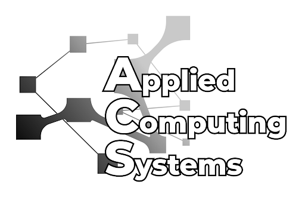

Primary Research Case
Synthetic Modality Fusion in Breast Doppler Ultrasound
Overview
Studied how B-mode structural information and Doppler flow information should be constructed and fused for reliable breast ultrasound classification under limited annotations and class imbalance.
Preprocessing→Input Construction→
Model Training→Synthetic Data→
Evaluation→Failure Analysis
My Role
- Built B-mode/Doppler preprocessing and paired-input pipelines.
- Compared Doppler-only, early fusion, two-stream fusion, cross-attention, and gated fusion architectures.
- Used ConvNeXt/ConvNeXtV2 with weighted loss, cross-validation, and ensemble evaluation.
- Designed tumor-flow interaction features with Doppler flow masks, pseudo tumor masks, Grad-CAM, CAM2SAM, MedSAM, and relation maps.
- Generated or restored synthetic modalities using RePaint, LaMa, GPT-Image-1, Imagen, Stable Diffusion, and related tools.
- Evaluated synthetic data through downstream classification and VLM/MLLM-based assessment, including MedGemma and Qwen2.5-VL, with prompt refinement informed by K-Means clustering of real Doppler morphology.
- Analyzed class imbalance, modality conflict, and failure cases to refine data construction and input design.
What I Learned A visually realistic synthetic image is not necessarily useful training data. I learned to evaluate generated data not only by visual quality, but also by its effect on downstream model behavior and task-specific utility.
- PyTorch
- ConvNeXt / ConvNeXtV2
- Multimodal Fusion
- RePaint / LaMa
- Stable Diffusion
- VLM / MLLM Evaluation